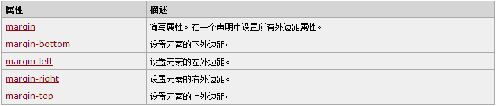

1.内边距、边框和外边距都是可选的，默认值是零；
2.margin 和 padding 设置为零来覆盖所有浏览器样式，解决浏览器兼容性 ;
* { margin: 0; padding: 0; }
3. 在 CSS 中，width 和 height 指的是内容区域的宽度和高度 ;
4. 增加内边距、边框和外边距不会影响内容区域的尺寸，
但是会增加元素框的总尺寸 ;
.box {
width: 70px;
margin: 10px;
padding: 5px 5px;
}
5. padding : 内边距，也有称为填充
6. border : 边框 ;
7. margin : 外边距，也有称为空白或空白边 ;
三方面： 宽度、样式，以及颜色 border border-style border-width border-color border-bottom border-left border-right border-top border: 1px solid red;
1.CSS margin 围绕在元素边框的空白区域是外边距。设置外边距会在元素外创建额外的“空白”; 2.margin 属性接受任何长度单位、百分数值甚至负值。 
上边距